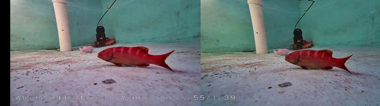
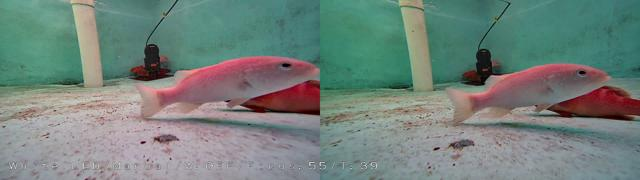
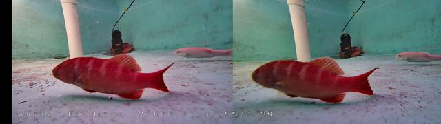
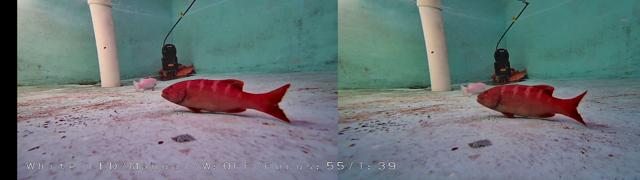
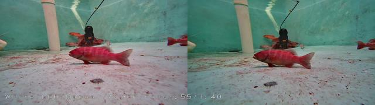
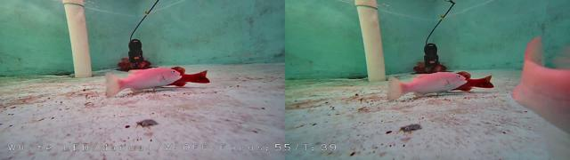

Resultados /
pose-bezierfusion-dataset2
Precisión 95,6 % 365 aciertos, 17 falsos
Recall 93,6 % 25 no detectados
F1 94,6 % IoU ≥ 0.5
IoU medio 0,84 de los aciertos
Error de puntos 6,3 % de la diagonal de la caja
Tiempo 72 ms por imagen
Modelo best.pt · confianza mínima 0.25 · imagen 1920 px · dataset completo
Dónde acierta y dónde se equivoca
131 de 159 imágenes sin ningún error.
En cada imagen: ✓ acierto (IoU ≥ 0.5), FP detección sin etiqueta, FN etiqueta sin detección.
Clic en una imagen para ver cajas, probabilidades y el mapa de atención.
punto 1 punto 2 punto 3 punto 4 punto 1 punto 2 punto 3 punto 4 punto 1 punto 2 punto 3 punto 4 punto 1 punto 2 punto 3 punto 4
1086.jpg
0 ✓ · 0 FP · 4 FN

punto 1 punto 2 punto 3 punto 4 punto 1 punto 2 punto 3 punto 4 punto 1 punto 2 punto 3 punto 4 punto 1 punto 2 punto 3 punto 4 punto 1 punto 2 punto 3 punto 4 punto 1 punto 2 punto 3 punto 4 punto 1 punto 2 punto 3 punto 4
1361.jpg
2 ✓ · 3 FP · 0 FN

punto 1 punto 2 punto 3 punto 4 punto 1 punto 2 punto 3 punto 4 punto 1 punto 2 punto 3 punto 4 punto 1 punto 2 punto 3 punto 4 punto 1 punto 2 punto 3 punto 4 punto 1 punto 2 punto 3 punto 4 punto 1 punto 2 punto 3 punto 4
527.jpg
2 ✓ · 0 FP · 3 FN

punto 1 punto 2 punto 3 punto 4 punto 1 punto 2 punto 3 punto 4 punto 1 punto 2 punto 3 punto 4 punto 1 punto 2 punto 3 punto 4 punto 1 punto 2 punto 3 punto 4 punto 1 punto 2 punto 3 punto 4
1336.jpg
2 ✓ · 2 FP · 0 FN

punto 1 punto 2 punto 3 punto 4 punto 1 punto 2 punto 3 punto 4 punto 1 punto 2 punto 3 punto 4 punto 1 punto 2 punto 3 punto 4 punto 1 punto 2 punto 3 punto 4 punto 1 punto 2 punto 3 punto 4
1356.jpg
2 ✓ · 2 FP · 0 FN

punto 1 punto 2 punto 3 punto 4 punto 1 punto 2 punto 3 punto 4 punto 1 punto 2 punto 3 punto 4 punto 1 punto 2 punto 3 punto 4 punto 1 punto 2 punto 3 punto 4 punto 1 punto 2 punto 3 punto 4
1512.jpg
2 ✓ · 2 FP · 0 FN
punto 1 punto 2 punto 3 punto 4 punto 1 punto 2 punto 3 punto 4 punto 1 punto 2 punto 3 punto 4 punto 1 punto 2 punto 3 punto 4 punto 1 punto 2 punto 3 punto 4 punto 1 punto 2 punto 3 punto 4
283.jpg
2 ✓ · 0 FP · 2 FN
punto 1 punto 2 punto 3 punto 4 punto 1 punto 2 punto 3 punto 4 punto 1 punto 2 punto 3 punto 4 punto 1 punto 2 punto 3 punto 4 punto 1 punto 2 punto 3 punto 4 punto 1 punto 2 punto 3 punto 4
290.jpg
2 ✓ · 0 FP · 2 FN
punto 1 punto 2 punto 3 punto 4 punto 1 punto 2 punto 3 punto 4 punto 1 punto 2 punto 3 punto 4 punto 1 punto 2 punto 3 punto 4 punto 1 punto 2 punto 3 punto 4 punto 1 punto 2 punto 3 punto 4
294.jpg
2 ✓ · 0 FP · 2 FN
punto 1 punto 2 punto 3 punto 4 punto 1 punto 2 punto 3 punto 4 punto 1 punto 2 punto 3 punto 4 punto 1 punto 2 punto 3 punto 4 punto 1 punto 2 punto 3 punto 4 punto 1 punto 2 punto 3 punto 4
315.jpg
2 ✓ · 0 FP · 2 FN

punto 1 punto 2 punto 3 punto 4 punto 1 punto 2 punto 3 punto 4 punto 1 punto 2 punto 3 punto 4 punto 1 punto 2 punto 3 punto 4 punto 1 punto 2 punto 3 punto 4
1172.jpg
2 ✓ · 1 FP · 0 FN
punto 1 punto 2 punto 3 punto 4 punto 1 punto 2 punto 3 punto 4 punto 1 punto 2 punto 3 punto 4 punto 1 punto 2 punto 3 punto 4 punto 1 punto 2 punto 3 punto 4
1175.jpg
2 ✓ · 1 FP · 0 FN